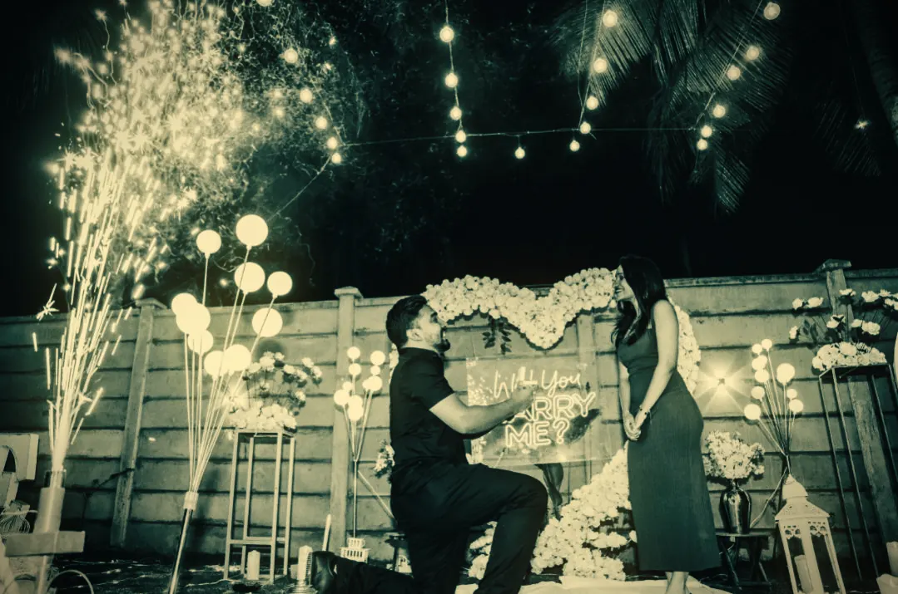
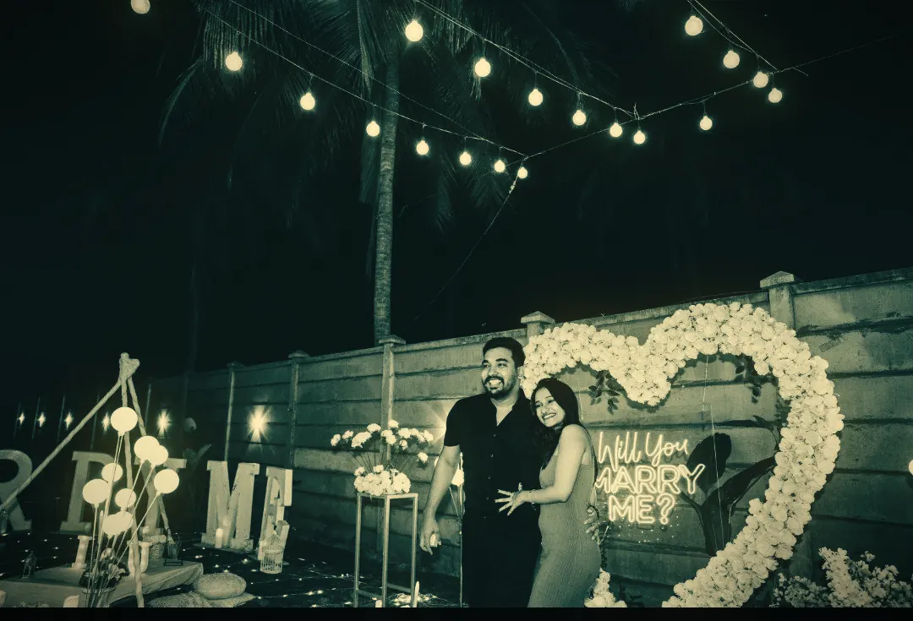

Joel & Sandra
At our closest, we were 0.01 cm apart

With the blessings of both families
വിവാഹം
Joel Francis Jose
son of T.C. Joseph & Tessy Mol Mathew
Sandra Binoy
daughter of Binoy Abraham & Renju Binoy
Nuptial Mass
Ponkunnam Church
3:30 PM
Reception
Base 11, Pala
To follow

ആമേൻ
Amen.
“So be it.”